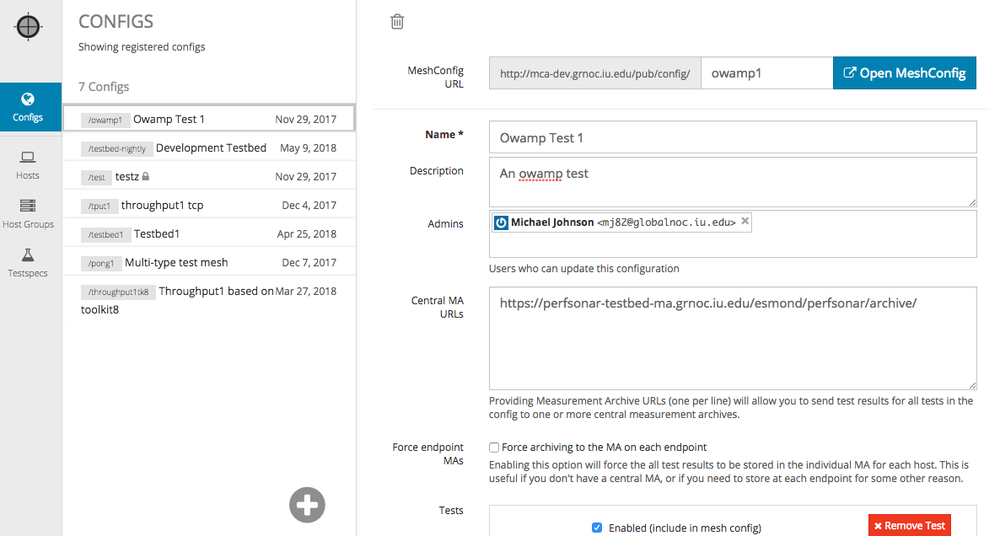

pSConfig Web Admin¶
pSConfig Web Admin (PWA) is a web-based UI for perfSONAR administrators to define and publish MeshConfig/pSConfig meshes, which automates tests executed by test nodes, and provides topology information to various services, such as MadDash.
In addition to providing a user-friendly interface for creating pSConfig/MeshConfig output to define meshes, PWA allows multiple users to collaborate on the configuration of testspecs, host groups, and configs. Users can be designated super-admins or normal users, depending on how much access they need. It is also possible to allow users to edit some meshes, but not others.
{kind=link}
Included with PWA is a publisher that allows users to download defined pSConfig/MeshConfig in JSON format.

PWA leverages the perfSONAR Global Lookup Service to provide a list of hosts that administrators can select in PWA’s host group editor. It supports adding new “ad-hoc” hosts manually.
PWA can also load host information from a private Simple Loookup Service instance.
Guide¶
Please submit bug reports / feature request at PWA Github Repo